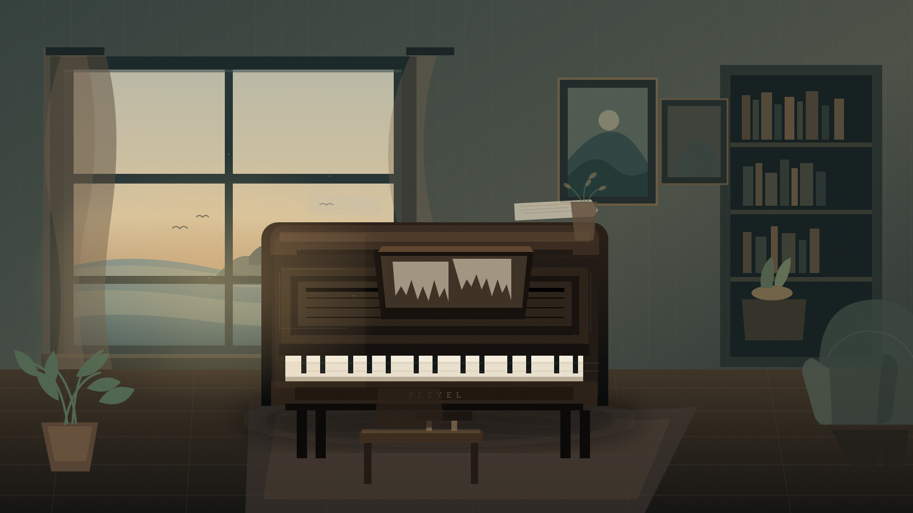

Une histoire en sept jours
Quand les notes s'effacent
Une maison au bord de la mer. Un piano. Une mémoire qui prend l'eau.
Prologue
La lettre
Kerlann · Les Mouettes
Jour 1
La clé sous le pot
Samedi 13 septembre
« On ne revient jamais vraiment chez soi. On revient vers quelqu'un. »
Sauvegardé
Fin
La note tenue
Ce qui reste
7journées
0souvenirs
—notes à toi
Merci d'avoir écouté.

Jour 1
Le fil
Écoute la phrase, puis rends-la-moi.
Fragment retrouvé